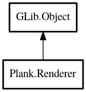

Renderer
Object Hierarchy:

Description:
public abstract class Renderer : Object
Handles animated rendering. Uses a timer and continues requesting redraws for a widget until no more animation is needed.
Content:
Properties:
Creation methods:
Methods:
- protected abstract bool animation_needed (int64 frame_time)
Determines if animation should continue.
- protected abstract void initialize_frame (int64 frame_time)
Preparations which are not requiring a drawing context yet.
- public abstract void draw (Context cr, int64 frame_time)
Draws onto a context.
- protected void force_frame_time_update ()
Force an immediate update of the frame_time property.
- public void animated_draw ()
Request re-drawing.
Inherited Members:
All known members inherited from class GLib.Object
- @new
- new_valist
- newv
- add_toggle_ref
- add_weak_pointer
- bind_property
- connect
- constructed
- disconnect
- dispose
- dup_data
- dup_qdata
- freeze_notify
- @get
- get_class
- get_data
- get_property
- get_qdata
- get_type
- notify_property
- @ref
- ref_sink
- replace_data
- replace_qdata
- remove_toggle_ref
- remove_weak_pointer
- @set
- set_data
- set_data_full
- set_property
- set_qdata
- set_qdata_full
- steal_data
- steal_qdata
- thaw_notify
- unref
- watch_closure
- weak_ref
- weak_unref
- notify
- ref_count